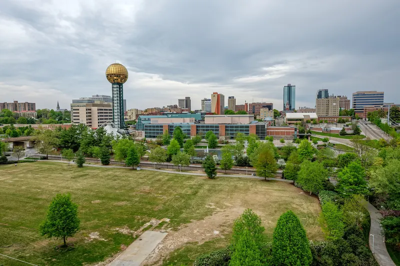

FAQ
Your roofing questions, answered
Get answers about repairs, replacement, inspections and insurance claims. If you’d rather talk it through, call or text us.

Search the answers
Answers come from our FAQ. Not there? Text us.
We couldn’t show an answer to that question. Text us at (865) 567-0233 and we’ll help.
Text your questionCost and paying
How much does a roof replacement cost in Knoxville?
Most asphalt shingle replacements on Knoxville-area homes of about 2,000 square feet land around $15,000 to $30,000. Size and pitch, a second layer to tear off, rotted decking and the shingle line you pick all move the number. Your free inspection gets you a written estimate, so you can see where the money goes. For a planning range on your own house, try the roof cost calculator.
Why do roofing quotes vary so much?
Because they often aren't pricing the same roof. One quote includes full tear-off, ice-and-water membrane in the valleys, and fresh pipe boots and flashing. Another reuses the flashing, skips the membrane and bills rotted decking later. Ask each roofer for an estimate and compare the scope.
Do you offer financing?
We don’t currently offer a lender program. We can give you an estimate to discuss with your bank or credit union. Our payment options page explains what to ask when comparing loans.
Will the price change once you start?
Your written proposal explains what's included and how concealed damage will be priced. If removing the existing roof reveals work outside that scope, we'll show you the problem and get your approval before proceeding.
Is a metal roof more expensive than shingles?
Usually, yes. Standing seam also costs more than exposed-fastener panels. The roof’s shape, the panel system and how long you plan to stay all matter when comparing the cost. We can quote metal and shingles for the same roof.
Can I pay for my roof over time?
You can take our written estimate to your own bank or credit union to discuss payment options. Compare the total repayment cost, fees, rate changes and early-payoff terms before choosing a loan.
Inspections
Is the inspection really free?
Yes. The inspection is free, with no obligation to hire us. We’ll show you what needs attention and explain your options. If the roof is in good shape, we’ll tell you that too.
Do I need to be home for the inspection?
You don’t need to be home for the outside inspection if we can get into the yard. Someone will need to let us in to check the attic. Either way, we’ll talk you through what we find.
Can I just text you a photo?
Yes. Text a photo and your address to (865) 567-0233. Ceiling stains or shingles on the ground are useful; stay off the roof to take pictures. We’ll help you decide whether someone needs to come out.
What's the satellite view on your website for?
It shows your own roof from above, so you can point to the spot you're worried about when you call. Satellite photos can be years old and too blurry to show damage, so they don't replace an inspection. Your address goes to Google to draw the map; we only get it if you send the form.
What happens during a free roof inspection?
We check the roof covering, flashing, vents, valleys, gutters and edges. On a house, accessible attic areas can help us trace water stains or ventilation problems. You'll hear what we found, whether it needs attention and what we recommend next.
Can you inspect my roof the same day?
Call or text us Monday to Friday, 8 a.m. to 5 p.m., and we inspect your roof the same day. Reach us after hours or on a weekend and we come out the next weekday morning.
Storms and insurance
After a storm, should I call my insurance company or a roofer first?
Start with an inspection so you know what damage is there and what repairs may cost. If you file a claim, we provide photos and an itemized construction estimate, and meet your adjuster to explain the work. Your insurer decides coverage.
Will my insurance pay for a replacement roof?
Your insurer decides based on your policy and the cause of the damage. Hail and wind damage may be covered; wear and age are generally treated differently. We document the roof's condition and provide a repair estimate for the adjuster's review.
Who pays the deductible?
You do. Your deductible is your share of the claim, and we never waive it, cover it, or rebate it. A roofer who offers to "take care of your deductible" is putting your claim at risk, so walk away. Some policies carry a separate wind or hail deductible. Check your declarations page so the number isn't a surprise.
Do you work with my insurance company?
We provide damage photos and an itemized repair estimate, and meet your adjuster to explain the construction scope. We can also document hidden damage found during tear-off. Your insurer determines coverage and payment.
What if my claim is denied or only partly paid?
Ask your insurance company to put the reasons in writing. Then we compare them to our photos. If something was missed, we re-inspect, photograph the specific areas and send your adjuster an itemized estimate for them. Sometimes the decision holds up, and a repair is the right next step.
Can I cancel a roofing contract if my claim is denied?
Yes. Under Tennessee law, if your roofing contract depends on an insurance claim and your insurer says in writing that the damage isn't covered, you can cancel by midnight of the third business day after that notice (T.C.A. § 62-6-602 and § 62-6-603). Money you paid, except for emergency repairs already done, comes back within 10 business days.
Do I have to use my insurer's roofer?
No. Your insurer may send you a list of roofers it works with, and you can call one of them if you like. You can also hire your own. The roofer you hire works for you, not for the insurance company. Pick the one whose written estimate and straight answers you trust.
What is a supplement?
A supplement asks your insurer to include work that wasn’t in the original claim estimate. Hidden damage can show up after tear-off. We photograph it and send the additional construction estimate for review.
How long does a roof insurance claim take?
Timing varies with your insurer and the storm. After widespread damage, adjuster availability can add to the wait. We’ll keep you updated on our part of the job and help provide the photos and repair estimate your claim needs.
What should I do first after a storm hits my roof?
Get everyone out of any room where the ceiling took a hit, and look for downed power lines from a window before you go outside. Put buckets under the drips and move what can't get wet. Take photos and video of the damage from a few angles before anything gets moved, and stay off the roof. If a tree is on the house, the tree crew goes first. Then call or text (865) 567-0233 to get a tarp on.
The replacement itself
How long does a roof replacement take?
A typical house takes one to three days once materials arrive. A larger or steeper roof, damaged decking and the weather can change the schedule. We’ll agree on the plan before starting and protect any open areas before the crew leaves.
What happens if you find rotted wood under the shingles?
It gets replaced, and only the boards that are actually soft. Rotted decking won't hold nails, and shingles over soft wood fail early. Your written estimate already lists the cost per sheet, so you know the number before work starts.
Do you tear off the old roof or go over it?
We remove the existing roofing so we can inspect the decking and replace damaged wood. Another layer can hide problems and add weight to the roof.
What about my yard, flower beds and nails in the driveway?
Tarps go over the flower beds and anything close to the house, debris goes straight into the dumpster, and a magnet sweep runs over the yard and driveway at the end. When the job is done, the dumpster goes too. If you find a nail later, call us and we'll come back for it.
Do you pull the permit?
We check the requirements for your property and handle any permits your project needs.
What shingles do you install?
We install architectural shingles from major manufacturers, including impact-resistant and algae-resistant options. We’ll help you compare the look and performance for your home. We also install metal roofing.
Repairs
Can you fix a leak instead of replacing the whole roof?
Often, yes. A leaking pipe boot, loose flashing or a few damaged shingles can be repaired on an otherwise sound roof. We’ll inspect the rest of the roof before recommending the work.
My roof is leaking right now. What do I do?
Put a bucket under the drip and move anything valuable. Keep people away from a bulging or sagging ceiling. Take photos, and stay off the roof in the rain. Then call or text (865) 567-0233. Emergency calls are answered around the clock.
My ceiling is stained near the chimney. Is it the chimney or the roof?
Usually it's the joint between them. Flashing runs under the shingles where the chimney comes through, and counterflashing set into the brick laps over it. When either pulls loose or rusts, rain runs down into your ceiling. We fix flashing, add crickets and seal crowns. If the brick itself is crumbling, you need a mason, and we'll say so.
My skylight leaks. Can it be fixed, or does it need replacing?
Most skylight leaks come from the flashing around the frame, not the glass. If the unit is sound, we reseal or reflash it, lifting the shingles around it and putting in fresh flashing. If the glass has fogged between the panes or the frame is cracked, replacing the unit makes more sense. Text us a photo to start.
Can you repair just one spot on my roof?
Yes, if the rest of the roof is sound. Pipe boots, loose flashing and a few missing shingles can often be repaired separately. We’ll also discuss how closely replacement shingles will match the ones you have.
Is it a repair or a replacement?
A repair makes sense when the problem is local and the rest of the roof is sound. Widespread wear or repeated leaks may make replacement a better investment. Age is part of the decision, but we look at the condition of the whole roof.
Should I repair or replace my roof?
We’ll look at the damage and the condition of the rest of your roof. A repair may be all you need. When replacement makes more sense, we’ll explain why and help you compare the options.
Local questions
Will my HOA have a say in my roof?
In a lot of Knoxville-area subdivisions, yes. Many covenants set rules on shingle color and sometimes material, and the HOA wants its review form signed off before work starts. We'll fill in the manufacturer, line and color for the form, and material gets ordered only after the HOA says yes in writing.
Why are there black streaks on my roof?
Black streaks are usually algae, especially on shaded slopes in our humid climate. They’re often cosmetic. Don’t pressure wash the roof; it can strip the protective granules. Algae-resistant shingles are an option when it’s time to replace.
Do you work on cabins and rental properties?
Yes. We work on cabins and rental homes, including steep and metal roofs. Owners and property managers can arrange an inspection without being on site. We’ll confirm access and keep you informed.
Does a Knoxville roof replacement need a permit?
We check the requirements for your property and handle any permits your project needs. A Knoxville mailing address alone doesn't establish which office covers the property.
Warranty, matching and gutters
What if replacement shingles don't match the rest of my roof?
It happens a lot, because colors get discontinued and old shingles fade. For a repair, we find the closest match we can, and you can see a sample before it goes on. After a storm claim, ask your insurer in writing how your policy treats a roof that won't match.
Do I need gutter guards?
Guards may help where leaves and pine needles repeatedly clog the gutters, but they still need maintenance. On an open roof with little debris, they may add little value. We check the tree cover and drainage, then price the gutters with and without guards.
What usually voids a roof warranty?
Coverage depends on the manufacturer and the warranty you choose. Later repairs, added roof penetrations, poor ventilation or pressure washing can affect it. We’ll explain the applicable terms for your roof; our warranty page covers the main questions.
Siding, windows, doors and decks
Do you install siding?
Yes. We install vinyl, fiber cement and engineered wood siding. We’ll help you compare the look and upkeep, and check the flashing and drainage before new siding covers the wall.
Do you replace windows and doors?
Yes. We replace windows and entry doors, either on their own or alongside siding work. We’ll help you compare products and plan the trim and flashing around the openings.
Do you build decks?
Yes. We build decks, porches, screened porches and covered patios. Where a cover joins the house, we plan the roof connection and flashing too. We can discuss wood or composite boards at a free visit.
Does a deck need a permit?
We check the requirements for your property and handle any permits your project needs. Your HOA may also need to approve the design.
Churches and commercial roofs
Do you do commercial roofing?
Yes. We repair and replace flat and low-slope roofs on businesses, commercial properties and churches. We work with TPO, EPDM, coatings and metal, and can help you plan around an occupied building.
Can you work around our church's services and events?
Yes. Tell us about Sunday services, weddings, funerals and other events when we plan the job. We’ll work with your church’s contact on the schedule and access to the building.
About Crestone
Who will I actually deal with?
Ryan Dix owns and leads Crestone Roofing Tennessee. You’ll have a project contact while the work is underway, and you can call or text (865) 567-0233 with questions.
Which areas do you cover?
We’re based in Knoxville and serve the surrounding communities and greater East Tennessee. Check our service areas, or text your address to (865) 567-0233 and we’ll confirm availability.
What are your hours?
Office hours are Monday to Friday, 8 a.m. to 5 p.m. We also offer 24-hour emergency service. Call or text (865) 567-0233, or request an inspection online.
Why choose Crestone?
If a repair will do the job, that’s what we’ll recommend. If you need a new roof, we’ll explain why. Crestone is family-owned and led in Tennessee by Knoxville native Ryan Dix. Meet Ryan and see our work.
Get your free inspection on the calendar
Tell us about your project. We’ll call to arrange your free inspection.
Rather talk? Call (865) 567-0233. Rather text? Send a photo.